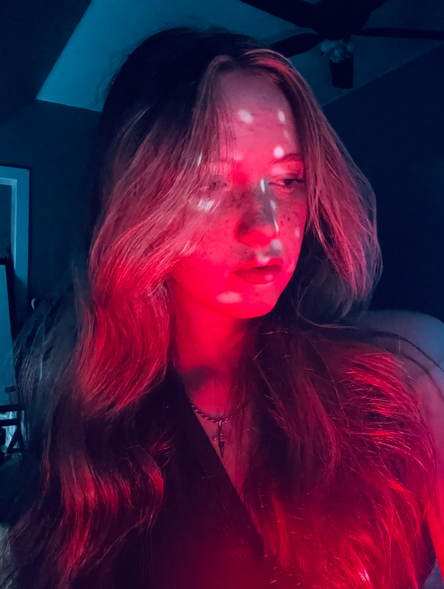

I'm Allison Parmann, a photographer based in Las Vegas, Nevada. Photography is my way of letting people see the world from my point of view — the grit of the rodeo arena, the quiet intensity of wildlife, and the electric pulse of city streets at night. Every frame I capture is a reflection of how I experience the world around me.
I was accepted into the Las Vegas Academy of the Arts for photography, where I've been sharpening my eye and developing my voice as a visual storyteller. While I plan to continue photography as a lifelong hobby and a form of self-expression, it has already become an essential part of how I connect with people and places.
My photography lives in the space between observation and emotion. Whether I'm freezing a horse mid-slide in a cloud of arena dust, catching the golden eye of a lemur through the leaves, or chasing steam and neon on a New York City sidewalk, I'm drawn to moments that feel both raw and fleeting. I don't stage my work — I wait for the world to reveal itself, and then I press the shutter. My goal is simple: to make people stop, look, and feel something they didn't expect.